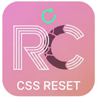
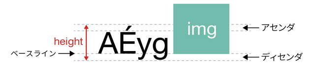

リセットCSS

- プロンプト例
リセットCSSについてわかりやすく解説して
- ブラウザのデフォルトスタイル（初期値）を解除するためのCSSは「リセットCSS」と呼ばれ、世界中でいろいろな手法が試されています。
- 目的は、各ブラウザが持つ「ボックスモデルの値」を初期化すること
- 以下の例は、最小記述の resetCSS の例になります
全称セレクタ（ユニバーサルセレクタ）
- 「*（アスタリスク）」
- HTML内のすべての要素を対象に適用できるセレクタ
@charset "UTF-8"; * { }
余白をなくす
@charset "UTF-8"; * { padding: 0; margin: 0; }
要素の幅と高さの計算方法を指定する
- box-sizing（要素の幅と高さをどのように計算するかを設定）
- content-box（初期値）
- border-box（paddingとborderを含めて幅のサイズとする）
@charset "UTF-8"; * { padding: 0; margin: 0; box-sizing: border-box; }
要素の幅と高さの計算方法
- CSSボックスモデルで定義している
- 初期値は、要素の大きさは「width / heightの値」＋「paddingの値」＋「borderの太さ」の値を足した数値で算出
border-box
- 初期値である「content-box」を「border-box」変更することにより、paddingとborderの値を含めずに「width / heightの値」のみで計算するようになる
リストの行頭スタイルを非表示にする
- 「ul」の行頭「●」を非表示にする
- 「list-style」は、「list-style-image」「list-style-position」「list-style-type」をまとめて指定
- 「li」を含めると「ol」指定時の「数字」が見えなくなります
ul { list-style: none;; }
リンクの文字色と下線の設定
- 文字色「inherit」は、親要素の文字色を継承する
- 下線の有無は、「text-decoration」で設定
a { color: inherit; text-decoration: none; }
img要素の最大幅を指定する
- サイト制作の実務では、画像のサイズを２倍の大きさで用意するため、親要素内に収まるように指定します
- 「vertical-align: bottom;」文字の小文字の下部に当たる部分の空き（ディセンダ）をとる指定
img { max-width: 100%; vertical-align: bottom; }

疑似要素も加える
- ::beforeと::afterは疑似要素といい、対象の要素に擬似的に要素を追加するためのセレクタです。
- 疑似要素は、全称セレクタではカバーしきれない場合があるため、この2つのセレクタも追加しています。
@charset "UTF-8"; *, *::before, *::after { padding: 0; margin: 0; box-sizing: border-box; }
まとめ
@charset "UTF-8"; *, *::before, *::after { padding: 0; margin: 0; box-sizing: border-box; } ul { list-style: none;; } a { color: inherit; text-decoration: none; } img { max-width: 100%; vertical-align: bottom; }